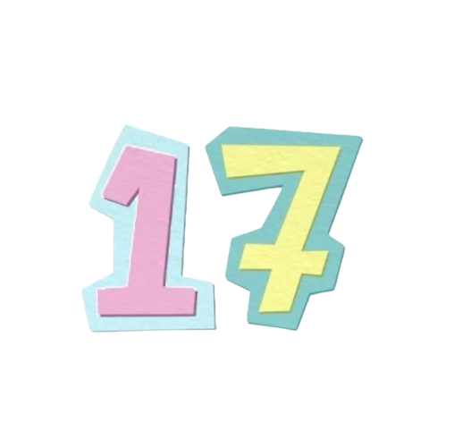
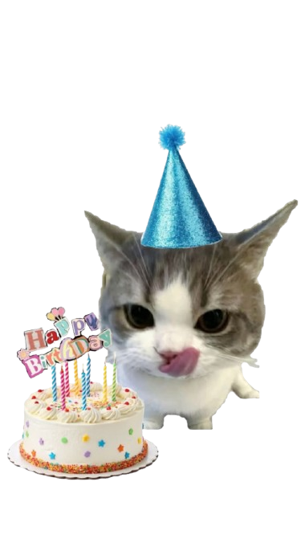
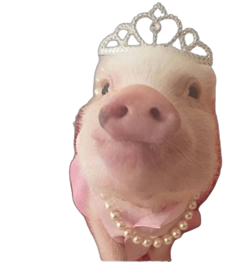
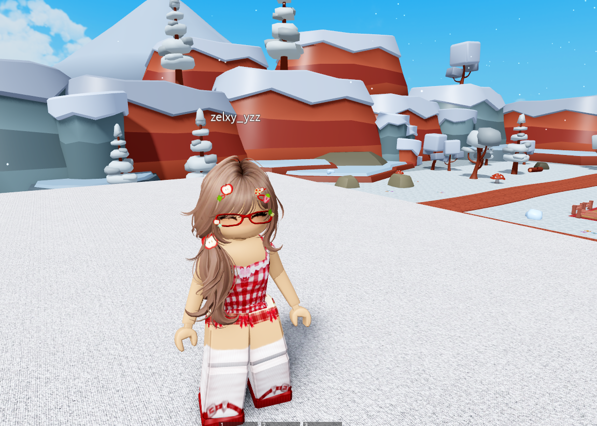
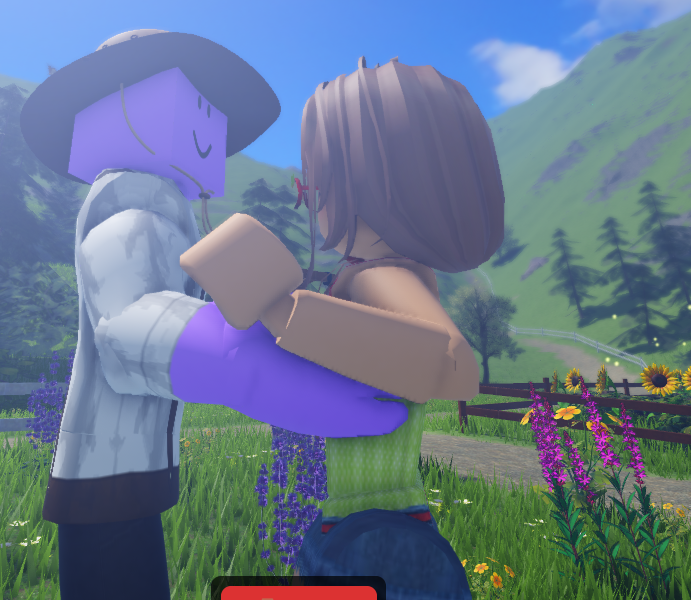
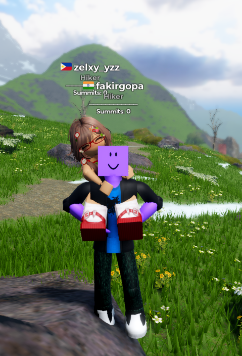
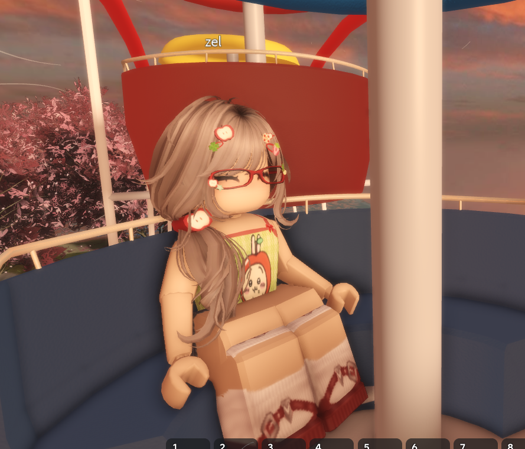
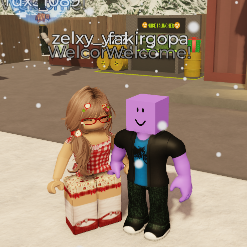

✿ a little something made just for you ✿
press start, and let the petals fall

chapter one · a birthday wish
Happy birthday to someone who fills every ordinary day with a little extra light. I hope this year hands you soft mornings, easy laughter, and every small thing you've been quietly wishing for. Never stop dreaming big and never give up on the things that make your heart feel full — the world is only better with you in it.
♪ playing softly for you maechapter two · the photo booth





chapter three · make a wish
Graciel
♪ hbd.mp3 is playingchapter four · from me, to you
Palangga tika Graciel ♡
chapter five · My animation